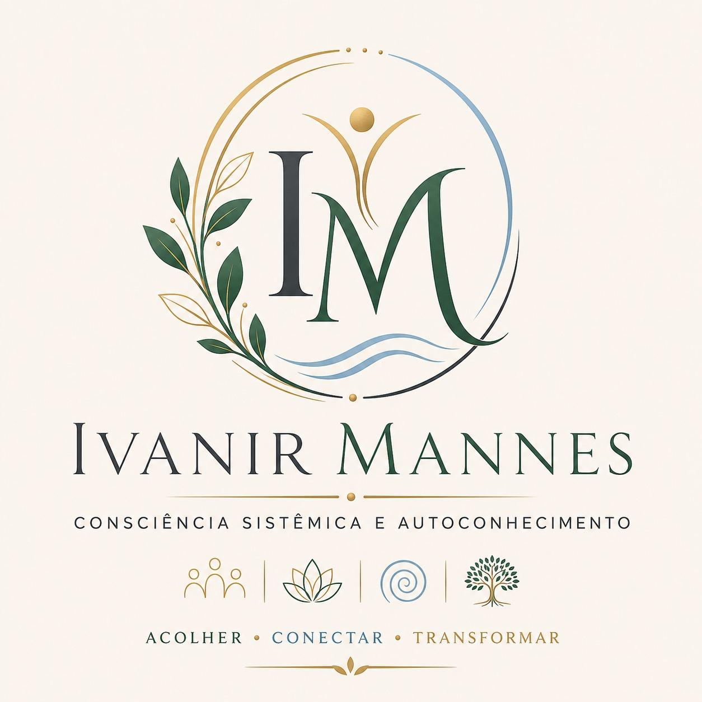

Cuidar, harmonizar e promover bem-estar
Transformação Humana com Acolhimento e Escuta Sensível
Ofereço terapias integrativas que respeitam a individualidade, proporcionando equilíbrio emocional, expansão da conciência e desenvolvimento pessoal em um ambiente seguro.

Acolher • Conectar • Transformar